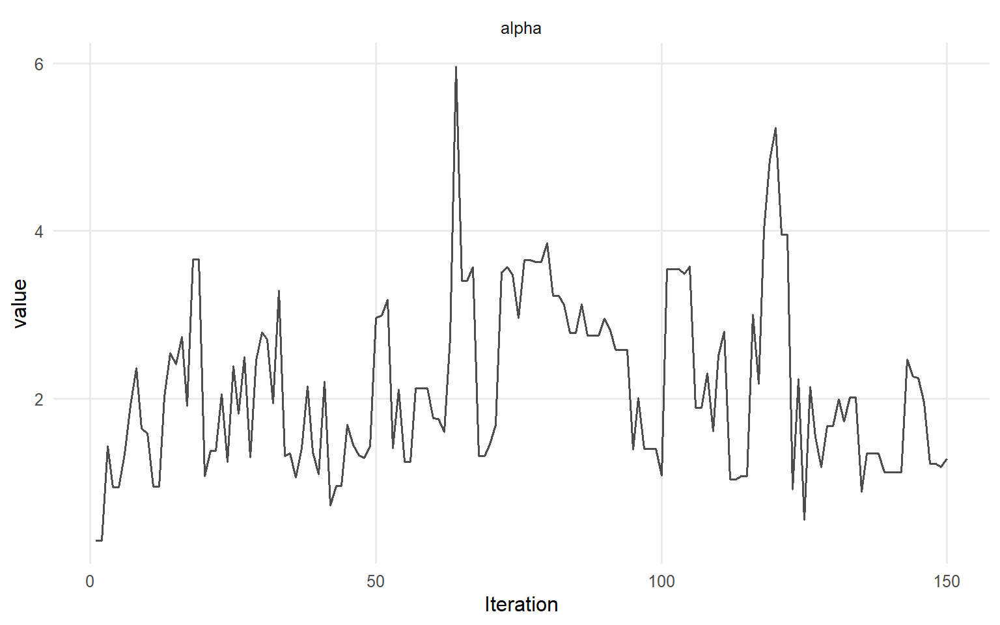
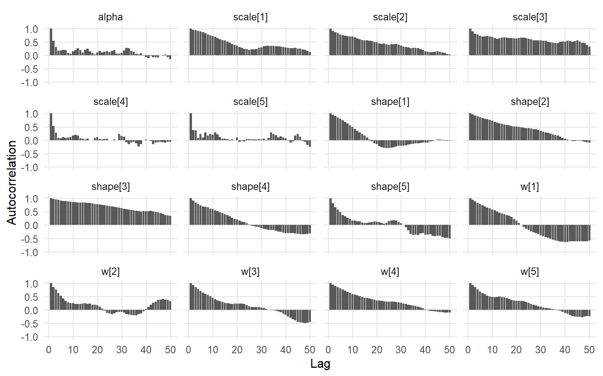
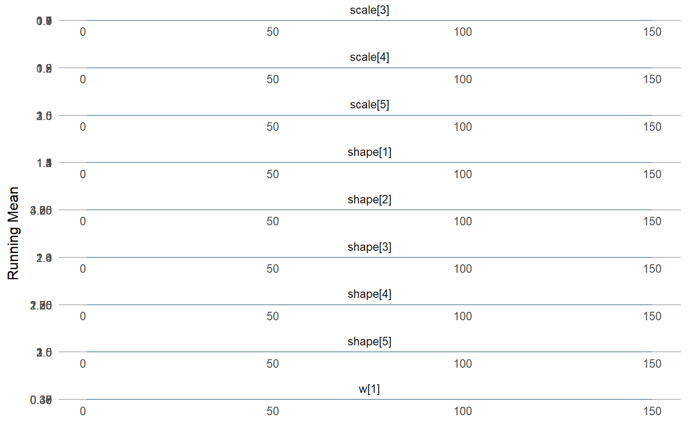
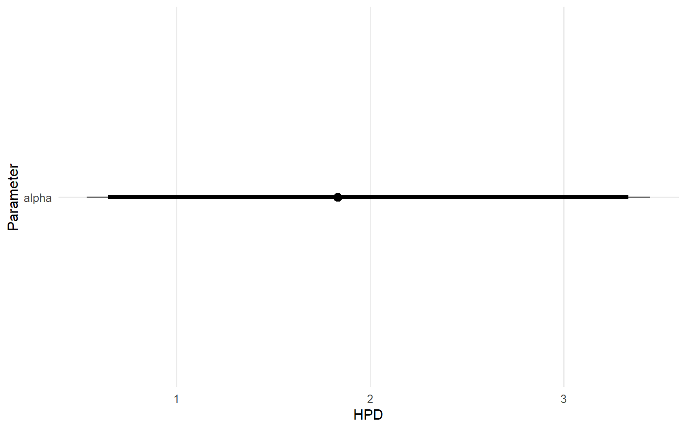
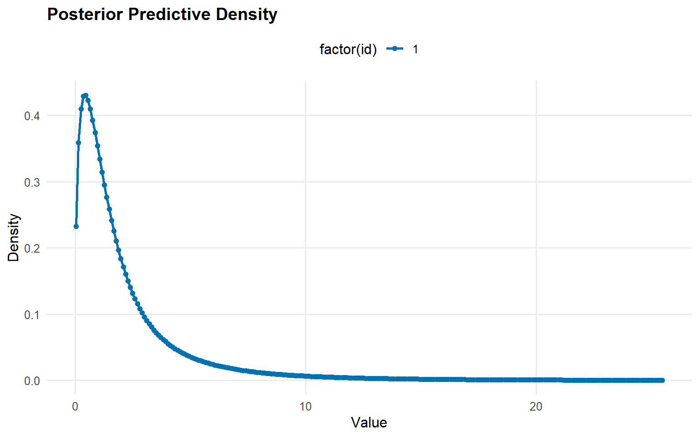
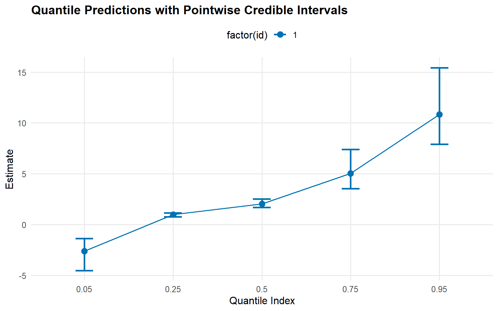
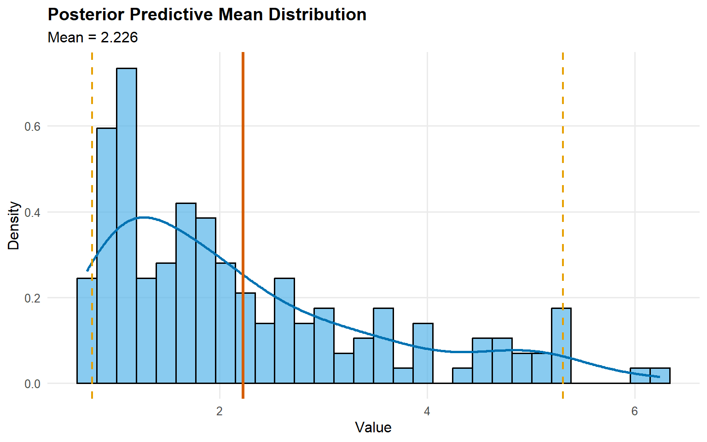
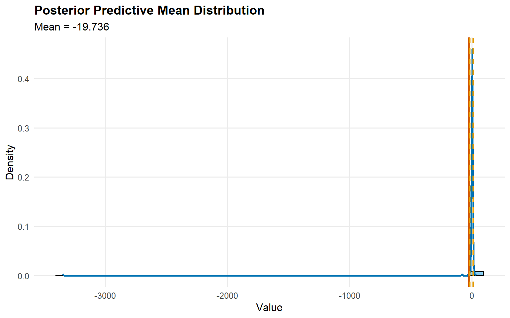

Website workflow note. This page reflects the current exported API and recommended wrapper-first usage. Last updated: 2026-02-19.
For the full package narrative, see the main package vignettes (basic, unconditional, conditional, and causal).
Unconditional DPmix: Stick-Breaking (SB) Backend
Purpose: Showcase the stick-breaking backend that uses a fixed number of mixture components (components = J) and contrast it with the CRP backend from start/backends-and-workflow. In this vignette we fit two bulk kernels (Gamma and Cauchy) on the same dataset to highlight how heavier tails in the bulk can change the fit even without a GPD tail.
What you’ll learn
How the stick-breaking (SB) backend differs from CRP in practice (fixed truncation via components = J).
How to use bundle() + dpmix() + predict()/plot() for an unconditional bulk-only DP mixture.
How bulk kernel choice (e.g., Gamma vs Cauchy) can change tail behavior even when GPD = FALSE.
When to use this template
You want a predictable runtime mixture workflow with a fixed upper bound on components.
You mainly care about bulk fit, density estimation, and posterior predictive summaries.
Next steps
If extremes matter, extend to dpmgpd() with GPD = TRUE (see ex03/ex04).
# A tibble: 5 × 2
statistic value
<chr> <dbl>
1 N 200
2 Mean 4.21
3 SD 4.11
4 Min 0.0403
5 Max 19.6
Model Specification & Bundle
We build the stick-breaking mixture explicitly with components = 5 so that there is room for weight decay while keeping the MCMC runtime manageable for a vignette. We then refit the same SB model with a Cauchy kernel for comparison.
# Default diagnostics for each fitplot(fit_sb_gamma, family =c("traceplot", "autocorrelation", "running"))
=== traceplot ===

=== autocorrelation ===

=== running ===

Code
plot(fit_sb_cauchy, family =c("density", "geweke", "caterpillar"))
=== density ===
=== geweke ===
=== caterpillar ===

Use summary(fit_sb_gamma) and summary(fit_sb_cauchy) to inspect effective sample size, R-hat, and other convergence diagnostics; the plot() calls above show the trace/density pairs for both global and stick-breaking weight parameters.
Stick-Breaking Weights & Component Activity
The stick-breaking weights are exposed via the plot() diagnostics above, and you can refer to the raw fit_sb_gamma / fit_sb_cauchy objects (or their summary() output) for posterior summaries of each component weight.
Posterior Predictions
Code
y_grid <-seq(min(y_mixed), max(y_mixed) *1.3, length.out =250)pred_density_gamma <-predict(fit_sb_gamma, y = y_grid, type ="density")pred_density_cauchy <-predict(fit_sb_cauchy, y = y_grid, type ="density")plot(pred_density_gamma)

Code
plot(pred_density_cauchy)
Code
quant_probs <-c(0.05, 0.25, 0.5, 0.75, 0.95)pred_q_gamma <-predict(fit_sb_gamma, type ="quantile", p = quant_probs, interval ="credible")pred_q_cauchy <-predict(fit_sb_cauchy, type ="quantile", p = quant_probs, interval ="credible")plot(pred_q_gamma)
Code
plot(pred_q_cauchy)

Code
pred_mean_gamma <-predict(fit_sb_gamma, type ="mean")pred_mean_cauchy <-predict(fit_sb_cauchy, type ="mean")plot(pred_mean_gamma)

Code
plot(pred_mean_cauchy)

Bulk-only vs CRP Backends
Code
bundle_crp_small <-bundle(x = y_mixed,kernel ="gamma",backend ="crp",components =5,GPD =FALSE,mcmc = mcmc)fit_crp_small <-load_or_fit("ex02-unconditional-dpm-sb-fit_crp_small", dpmix(bundle_crp_small))crp_quant <-predict(fit_crp_small, type ="quantile", p = quant_probs, interval ="credible")sb_quant <-predict(fit_sb_gamma, type ="quantile", p = quant_probs, interval ="credible")bind_rows( crp_quant$fit %>%mutate(model ="CRP"), sb_quant$fit %>%mutate(model ="SB")) %>%select(any_of(c("model", "index", "estimate", "lower", "upper")))
For unconditional models, use predict() only; fitted() and residuals() are not supported.
Takeaways
SB Backend: Fixed components keeps label-switching manageable, and the diagnostic plots via the S3 plot() method show weight dynamics.
Kernels matter: Gamma vs Cauchy can behave very differently in the shoulders/tails, even without a GPD tail.
Predictions: Posterior density, posterior-mean quantiles, and mean (via predictive sampling) are accessible via predict() with pointwise 95% credible intervals.
Backend comparison: The CRP fit (start/backends-and-workflow) and the SB-gamma fit deliver similar central quantiles while SB offers more control over truncation.
Next: Explore tail augmentation (GPD = TRUE) with the CRP backend in ex03 or SB backend in ex04.